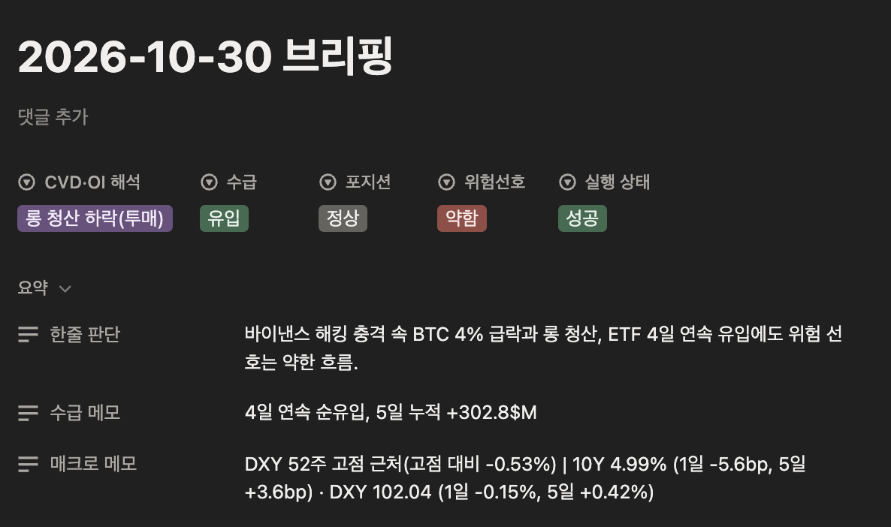
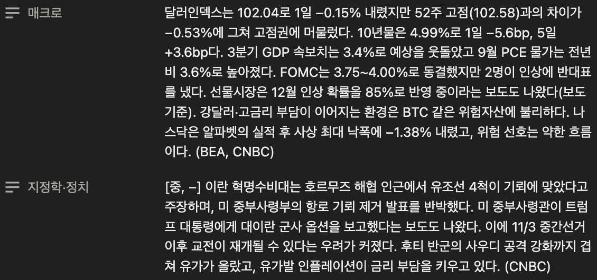
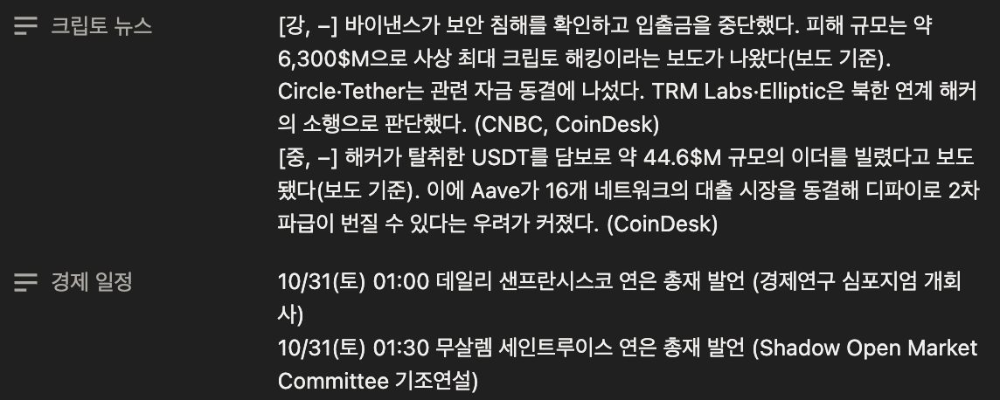
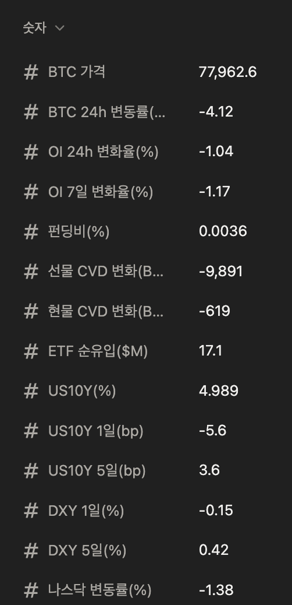

AI 에이전트, MCP, 실무 적용
마켓 브리핑 에이전트와 기록 조회 MCP 서버
회의 전 반복되던 시장 브리핑 작업 자동화. 쌓인 기록은 MCP 서버로 조회
| 기간 | 2026.09–11 |
|---|---|
| 형태 | 이지스벤처스 업무에 적용 |
| 기술 | Python, pandas, Claude Code, Notion API, Binance API, SQLite, MCP Python SDK |
문제
- 매일 회의 전 시장 데이터(파생 지표, ETF 수급, 금리와 달러)를 모으는 반복 작업
- 시장에 영향을 주는 뉴스(지정학 이슈, 크립토 사건)와 경제지표 발표 일정(CPI, PPI, FOMC 등)까지 매번 따로 정리
- 같은 숫자를 보고도 해석 기준이 그날그날 달라지는 문제
- 기록이 쌓인 뒤에는 "어떤 시장 상태가 며칠 있었는지" 같은 질문에 노션 페이지를 일일이 열어야 하는 불편함
에이전트 설계와 구현
- 거래소, ETF, 금리, 달러 지표는 코드로 수집. OI, CVD 변화율과 ETF 연속 유입·유출 일수 등 추세 중심으로 지표 구성
- 시장 상태 판정은 코드 규칙(가격, OI, CVD 방향 조합 7분류)으로 고정해 해석 기준 통일
- 매크로, 지정학, 크립토 뉴스와 경제 일정은 Claude가 웹 검색으로 찾아 영향도와 출처를 붙여 정리
- LLM 출력은 정해진 구조로 받아 누락, 길이, 태그 모순을 코드로 재검증. 기준을 어기면 기록하지 않게끔 설계
- 늦게 집계되는 ETF 값은 잠정, 확정 2단계로 기록. 노션에는 허용된 속성만 쓰도록 권한 분리
MCP 서버로 확장
- 노션 기록을 SQLite 테이블과 뷰로 동기화 (노션은 조회 API만 호출)
- 자주 쓰는 분석은 SQL 도구로 정의: GROUP BY 조건부 집계, 윈도 함수로 ETF 연속 유입·유출 구간 계산
- 나머지 질문은 Claude가 직접 SELECT를 작성하는 조회 도구로 제공, 스키마는 리소스로 공개
- 읽기 전용 연결, query_only, SQLite authorizer로 쓰기 동작 3중 차단
배운 점
- LLM에 맡길 일과 코드로 고정할 일을 먼저 나눠야 결과가 매일 일관됨
- 도구를 열어 줄 때는 할 수 있는 일만큼 못 하게 할 일을 먼저 정해야 함
화면과 구성




## state_summary {"state": "롱 청산 하락(투매)", "days": 3, "avg_btc_chg_pct": -4.26} ## etf_flow_streaks {"dir": "유출", "start": "2026-11-02", "end": "2026-11-04", "days": 3, "total_musd": -1157.5} ## query_sql SELECT date, us10y_chg_1d_bp, btc_chg_24h_pct ... WHERE us10y_chg_1d_bp >= 10 {"date": "2026-11-11", "us10y_chg_1d_bp": 11.9, "btc_chg_24h_pct": -2.08} ## query_sql DELETE FROM briefings 거절: SELECT 또는 WITH로 시작하는 조회만 허용됩니다.
AI 활용Claude Code로 수집, 판정, 검증, 기록 모듈과 MCP 서버 구현. 판정 기준, 도구 설계, 권한 범위는 직접 결정